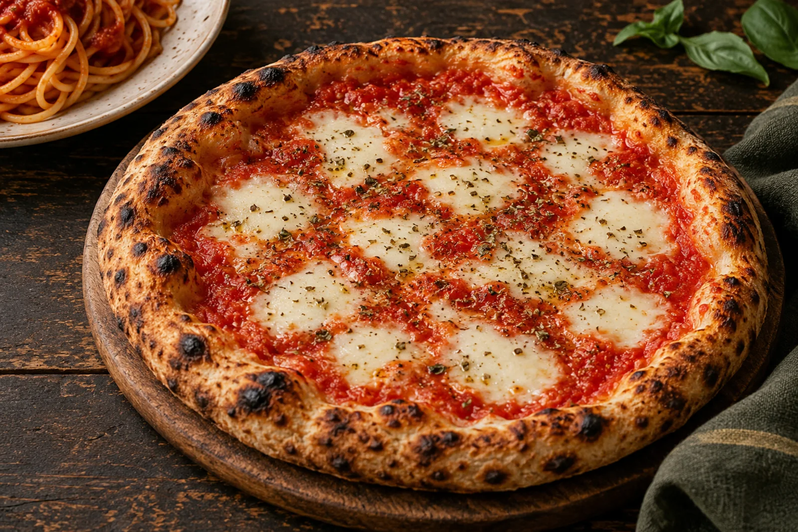
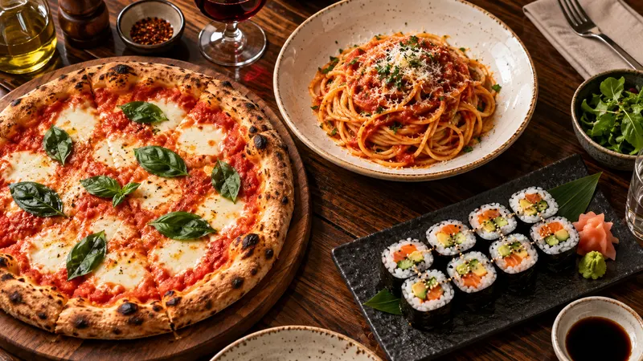

BUONISSIMO!
Pizza, Pasta und vieles mehr – entdecke die Karte von La Mela d’oro.
PIZZA, PASTA
UND NOCH MEHR.
Bei La Mela d’oro in Zeitz findest du italienische Klassiker, mediterrane Gerichte und Sushi auf einer Karte.
Zur SpeisekarteKI-generiertes Stimmungsbild · Serviervorschlag
DEIN LIEBLINGSGERICHT
WARTET SCHON.
jetzt entdecken
KI-generiertes StimmungsbildBESTELLEN
Wähle deine Gerichte aus der Speisekarte. Die Bestellung und alle Details klären wir persönlich am Telefon.
jetzt auswählen +49 3441 2590861Deine Auswahl ist eine Anfrage, keine bestätigte Bestellung.BESUCH UNS
IN ZEITZ!
La Mela d’oroDietrich-Bonhoeffer-Straße 10a
06712 Zeitz, Sachsen-Anhalt+49 3441 2590861Route planen
ÖFFNUNGSZEITEN
- Montag – Donnerstag
- 17:00 – 22:00
- Freitag – Sonntag
- 11:00 – 14:00
17:00 – 22:30
Quelle: Google Maps · Stand 06.10.2026
Für Feiertage bitte telefonisch nachfragen.